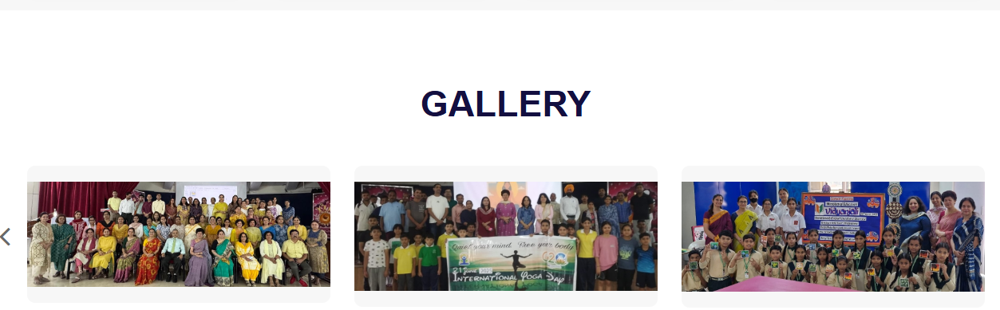

Though our school commenced its first academic session on 09 Apr 2007, it was only on 21 Feb 2008 after the construction of our unique school building that the school was formally inaugurated and thus it is this day which is celebrated as our Founders day. At this juncture the school was only till Class VIII. You would be amazed to know that at that juncture the school had 1048 students and 15 teachers. Subsequently, classes IX, X , XI and XII were added by the year 2010. Over the years our school has grown and we now have 3020 students in the APS SV family. We have recently added nine new classes and now have a total of 73 sections in our school. In fact the school now boasts of a built-up area of 24281.12m on a ground of over 56655.99m2. The growth of the school in the seven years of its existence is well-nigh without parallel and can be viewed with pride and gratification by its management. Let me now tell you something about our school. The school has a vision of providing a congenial atmosphere to students, enabling them to excel in every field in life, thus helping them to grow. The School is committed to creating an enriching educational environment that promotes student achievement and success in helping them to grow into healthy, happy and holistic global citizens of the world. The school offers courses in Commerce, Science and Humanities streams at the higher secondary level. The school has carved a niche for itself with its optional core subjects. The performance of our Class XII students is a testimony of the same wherein, our science, commerce and humanities toppers have scored 96.4, 94.4 and 94.6% respectively. A testament of our academic excellence was standing first and winning the Western Command overall best academic trophy. In addition to this we have also won the Lt Gen SK Sinha trophy for securing second amongst all APSs in Class XII CBSE board examinations. The school also provides numerous opportunities for its students to take part in competitive exams. The school is proud that the students have made the most of these opportunities by winning 78 gold, 24 silver and 17 bronze medals in various Olympiads. The Army Public School Shankar Vihar though is committed to the multi-faceted growth and upliftment of students by offering to them not merely the inputs that are necessary for excellent performance in national level examinations, but also more general education designed to enhance maturity, breadth of vision and versatility of personality. Towards this end, co-curricular and sports activities play a large part. As regards co-curricular activities, the schools Intach Heritage club activities holds a number of activities ranging from self exploratory projects, data collection and analysis, and video making using ICT. You would be happy to know that our school won the awards for the best message and best visuals for the short films on our heritage and culture. Our school was the winner of the Army Day 2016 quiz competition also. Besides this, the school also undertakes ISA activities which have opened new vistas for our students to explore untouched grounds and scale new heights. Our school has a rich sporting history and students of the school have won medals and excelled in different sports ranging from golf, handball to taekwando. Infact our school made history in the Delhi state taekwando competition by standing second from amongst 195 schools and 60 clubs that participated. Our School has been a member of the National Progressive Schools’ Conference (NPSC) since 2014. This year we had the privilege of being selected as Executive Team Member of the NPSC Schools. The crowning glory for our school is the fact that it has been awarded the International school award for the year 2014-17. The feat is even more creditable when you consider the fact that from amongst 137 Army Public Schools, only two schools are recipients’ of this prestigious award and APS Shankar Vihar is one of them.
English Hindi Maths etc
